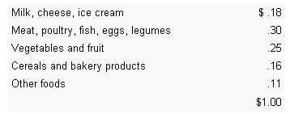
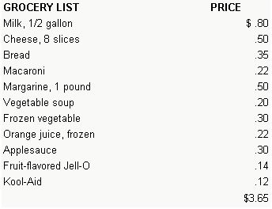
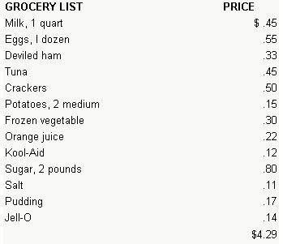
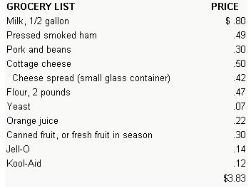
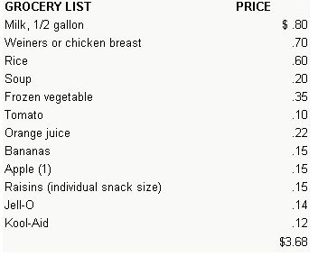

If you're a homesteader with a winter's food supply already pickled and canned and roof cellared, read no farther. Organic food freaks and scorners of the supermarket had better turn the page likewise. But if you're single, urban and living mostly on greaseburgers, here' one way to maybe upgrade your diet just a little . . . while you cut the ole food bill right down to the quick. Needless to say, this article is especially dedicated to all the city-trapper "apt get along" by eating dogfood and raiding garbage cans.
For some time now I've been living on approximately $100 per month (including rent, food and everything else) . . . not from necessity, but by choice. I'm convinced that there are ways out of today's money-crunching inflation, and I'm trying to find them.
Since most of us are still at the mercy of the grocery store-and are not growing, canning and freezing our own food, which is ideal-one of our biggest problems is the food budget. Therefore, months ago-as an experiment-I decided to limit my grocery bill to between $3.50 and $4.00 per week. I also undertook to use only the items which I bought week by week and to disregard any surplus goods that I might have accumulated on my pantry shelves.
Before I began my program, I found it necessary to stud v nutrition so as to buy the foods my body needed to stay healthy. That precaution paid off. In two years my only illness has been one cold, which required no medication. I have lost a few pounds, but I attribute this to the fact that I no longer own a car and now walk four or five miles a week. (Please note: It was not my intention to diet, but rather to maintain well-balanced meals economically. This is war on inflation, not a weight-watchers' plan.)
Bear in mind, before you attempt to duplicate my success, that I live alone and don't have the responsibility of feeding a growing family. In fact, I don't even recommend the following subsistence level of nourishment for youngsters. All the same, I have learned some ways in which families can-and should-pare back their grocery bills without cutting nutrition.
The starting point for my program was a recent low-cost food plan prepared by the U.S. Department of Agriculture. According to that source, the consumer's food dollar should be spent as follows:
I used the USDA's recommendation as a beginning guide for meal planning, but allowed more money for milk products, meat and vegetables and less for the fats, sugar, coffee and soft drinks classified as "other foods". Also, I found that one of the secrets of wise marketing is to emphasize a particular basic food group each week . . . not to the neglect of the others, but rather as a base around which the menus are planned.
This article includes my grocery shopping lists and meal plans for several weeks, along with some choice money-saving recipes. The prices I quote are what I'm paying at the local IGA as of late 1974 . . . and I should point out that there's no tax on food here in the small town in northeastern Kentucky where I live.
WEEK NUMBER ONE
SUGGESTED MENUS
BREAKFAST
Milk, 5 ounces
Toast with margarine
Orange juice
Applesauce
LUNCH/SUPPER
Choose from:
Grilled cheese sandwich
Soup
Macaroni and cheese
Green vegetable
Jell-O
Milk or Kool-Aid (alternate as beverage)
Lunch and supper menus can be interchanged depending on when and what you prefer eating. The idea is to balance the nutrients your body needs. Keep in mind that eggs, dried beans, peanut butter and cheese are all protein foods that replace meat. Know the good buys for each month and weave them into your basic diet.
With a week-by-week approach like mine, economy takes on a whole new slant. At first it may seem that you consume all you buy in a single period . . . but cooking for one hardly requires four sticks of margarine, for example, or a box of macaroni or two pounds of sugar all in one week. With these items and small amounts of other leftovers in mind, you can plan each shopping trip more economically.
You'll notice that my menus do involve some "cooking", though not in the sense of elaborately planned meals. There are many simple recipes and preparations that even the most helpless bachelor can "cook up" for himself.
A good start for the beginner is fruit gelatin or pudding (just add water or milk respectively). And almost everyone can make a sandwich and heat soup. Add to this the ever-popular grilled cheese technique: If you can smear margarine on bread and add a slab of cheese between slices, smash the result down and watch the filling melt in a skillet or under the broiler, you're on your way to successful economy-minded cookery.
OK. After that elaborate introduction to culinary techniques, you should be ready for my macaroni and cheese recipe (a good one because macaroni goes a long way and cheese is a meat substitute). Follow the directions on the package and cook as much pasta as you can eat in one serving. Then add margarine and cheese spread (left over from a previous week) or slices, and stir the mixture until the sauce is blended. That's it!
WEEK NUMBER TWO
SUGGESTED MENUS
BREAKFAST
Milk
Orange juice
Eggs (poached, scrambled, soft- or hard-boiled)
Toast (the 3 or 4 slices of bread left from last week)
LUNCH/SUPPER
Choose from:
Deviled ham
Tuna
Hard-boiled eggs
Deviled eggs with ham
French fries
Potato salad
Vegetables
Jell-O
Pudding
Milk
Deviled ham and tuna can be stretched by adding a dab of mayonnaise and some hard-boiled egg.
Potato salad is nutritious and easy to prepare. All you need is two medium-sized potatoes peeled and cut in cubes 1/2-inch thick. Boil them 15 minutes or until done. Cool the cubes and add 1 tablespoon mayonnaise, a hard-boiled egg and relish.
Frozen vegetables are a good choice for this diet because they contain many nutrients and don't have to be used all at one time: You can "thaw and cook" small portions as desired. In season, of course, fresh vegetables and fruits are always welcome means of economizing.
Leftovers from Week Number Two include salt, crackers, sugar, margarine and some eggs.
WEEK NUMBER THREE
SUGGESTED MENUS
BREAKFAST
Milk
Orange juice
Eggs
Fruit
Homemade sweet rolls
LUNCH/SUPPER
Choose from:
Bread (make one loaf, or rolls)
Smoked ham with white sauce
Pork and beans
Macaroni and cheese
Any leftover vegetable from previous week
Cheese spread on crackers
Cottage cheese
Fruit
Milk
Homemade cookies
The cheapest way to buy pork for one is in the form of pressed ham or luncheon meat. It makes a good beginning for a meal, served on toast with white sauce (prepared from a little margarine, flour, salt and milk).
As you'll have noticed, this is breadmaking week . . . a real challenge and lots of fun. If you don't know how, you can send for a step-by-step booklet free from Fleischmann's Yeast, P.O. Box 509, Madison Square Post Office, New York, N.Y. 10010. All you need is:
2-1/2 cups flour
1 tablespoon sugar
1/2 teaspoon salt
1 package yeast
1/4 stick margarine
1-1/8 cups warm water
Rolls can be made from almost the same recipe but with a little less effort because some varieties don't have to be kneaded.
Leftovers from Week Number Three include salt, sugar, margarine, flour, cheese spread and possibly some vegetables or fruit.
WEEK NUMBER FOUR
SUGGESTED MENUS
BREAKFAST
Milk
Orange juice
Sliced bananas
Muffins
Raisin cookies
LUNCH/SUPPER
Weiners or chicken
Vegetables
Tomato slices
Rice
Cheese spread
Rolls and margarine
Rice pudding
Apple crisp
Cookies
Milk
Kool-Aid
Buying only chicken breast gives you white meat which can be used in several economical ways. Boil the cut for 25 minutes or until tender, bone it and use half for a chicken pie. Reserve the other slices for sandwiches and chicken salad.
To make chicken pie: Cut one small potato in paper-thin wafers, place them on the bottom of a casserole and dot them with butter. Lay chicken slices on top of the potatoes. Pour undiluted celery soup and 1/2 cup chicken stock over the dish, cover it with piecrust and bake at 425° for 30 minutes.
A nutritional note, while I'm on the subject of chicken: Meat, poultry, seafood, eggs, milk and cheese are sources of complete protein. The National Research Council on Nutrition says that to maintain good health the average man requires 55 grams of protein per day and the average woman about 45 grams. One 2-ounce serving of cooked lean meat, poultry or fish will supply 15 grams. The following foods in the quantities named will give the same amount of protein per serving: 2 eggs, 1/4 cup cottage cheese, two 1-ounce slices of cheese, 1 cup dried beans, 1/4 cup peanut butter.
Although the menus given here are not intended as a diet, economy is like dieting in one way: It's not what you eat but, rather, how much. Buy only what you can consume and use your imagination to stretch that food dollar.
Also, don't be afraid to cook for one . . . make a habit of it! It's cheaper to learn about nutrition than it is to pay for elaborately prepared jiffy foods and quickie meals at drive-ins. You just can't eat three meals at any restaurant for $4.00 a day . . . even on the "hamburger and french fries to go" level. Plan wisely, cook for yourself and you can save up to $18.00 a week on food alone. In 1974, that's worth trying for.
|
|
 |
 |
|
 |
|
 |
|
 |
|
|